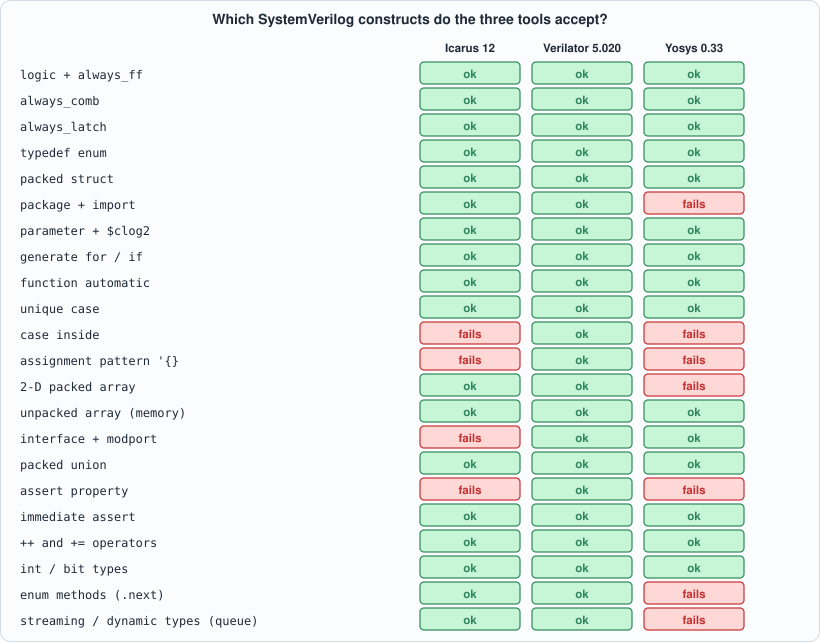
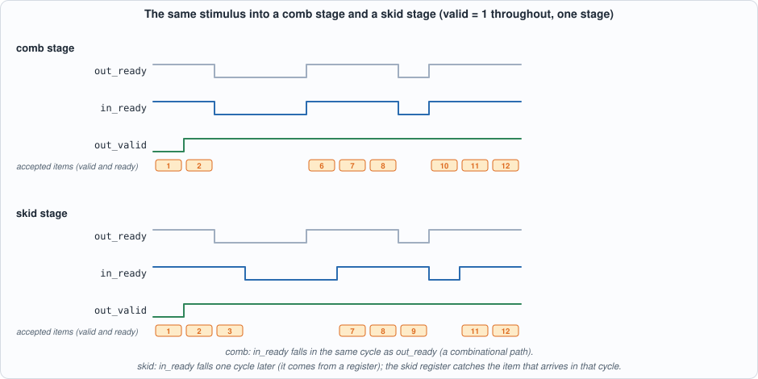
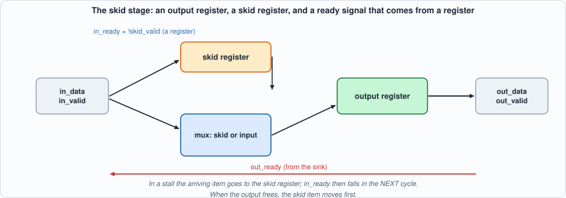
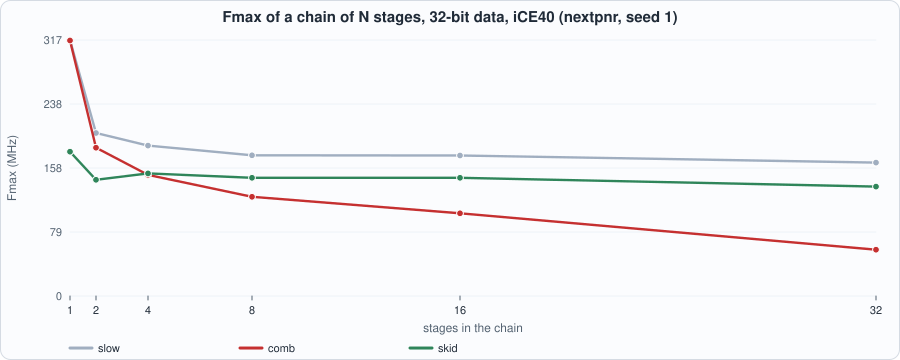
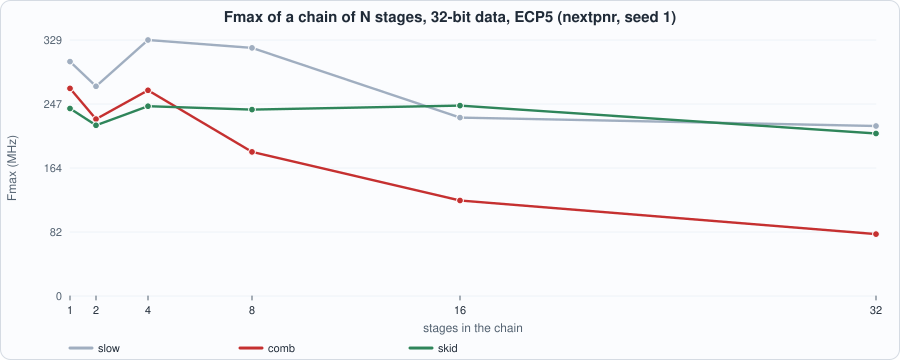
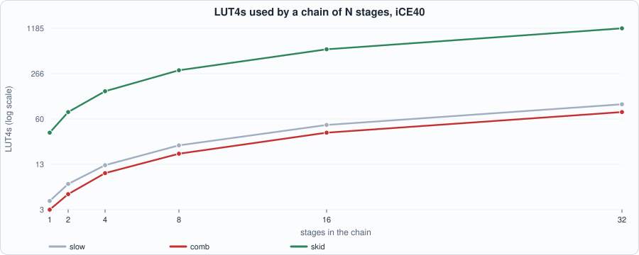
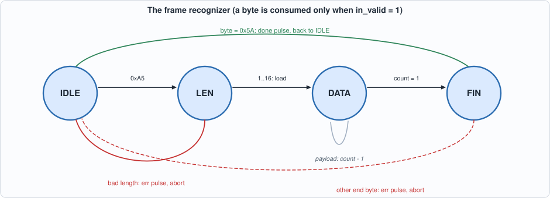

2. Hardware Design in SystemVerilog: A Portable Subset, Valid/Ready Stages, State Machines, and Lint¶
About the kestrels in this picture
- American kestrel (Falco sparverius) is the smallest falcon in North America and is found from Alaska to South America. The sexes differ in plumage: males have blue-grey wings, females are barred rufous. It hunts insects and small vertebrates from perches and by hovering.
- Common kestrel (Falco tinnunculus) ranges across Europe, Asia and Africa. It is famous for hovering: it faces the wind and holds its head almost still while its body adjusts, searching the ground below before it drops onto prey. A much-cited study reported that voles' scent trails reflect ultraviolet light, which kestrels may be able to see.
The scene is imaginary and the birds are stylised drawings.
What you will see: the part of SystemVerilog that three real tools all accept, measured rather than recalled; a lint gate that every design file must pass before it is simulated; and two running designs that every later chapter will lean on. The first is a valid/ready pipeline stage written three ways (a slow one, a fast one with a combinational ready path, and a skid buffer), which turns out to decide the speed of every long pipeline in the book; the second is a frame recognizer (a state machine) written three ways and proved equivalent with a SAT solver.
What you need to know first: Chapter 1, and the Capra book's Appendix B (Verilog) if the syntax below is new. No other SystemVerilog is assumed.
What this chapter builds: rtl/vr.sv (the three stages and a chain), rtl/frame_fsm.sv (the three recognizers), rtl/lint_bad.sv and rtl/lint_good.sv, the golden models model/vr_gold.py and model/frame_gold.py, the testbenches tb/vr_tb.sv and tb/frame_tb.sv, tools/ch02_run.py, tools/mut_ch02.py, and the running examples tools/ch02_example_a.py and tools/ch02_example_b.py.
What SystemVerilog adds, and what this book uses¶
SystemVerilog is Verilog plus the features that make hardware descriptions checkable:
logicreplaces thereg/wiredistinction: one type for a signal, whatever drives it.always_ff,always_comb,always_latchsay what a block is meant to be, so the tool can complain when the body does something else (a latch inalways_comb, a blocking assignment inalways_ff).typedef enum, packedstruct,package: names for states and for the fields of a bus.generatewithforandif,function automatic,$clog2,unique case.- assertions and interfaces (bundles of signals with directions): useful, and not universally supported by the open tools, as the next section shows.
The language is large and the tools implement different parts of it. The book's own tests run every design in Icarus Verilog and Verilator, and synthesize it with Yosys, so the practical subset is the intersection of the three. That intersection is easy to measure, and measuring it is better than trusting a table from memory.
The portable subset, measured¶
Example A feeds 22 tiny modules, one per construct, to the three tools and records which ones accept them.

Figure 2.1: accepted (green) and rejected (red) constructs. 14 of 22 are accepted by all three tools.What stands out:
- Everything everyday works everywhere:
logic,always_ff,always_comb,always_latch,typedef enum, packedstructandunion,parameterwith$clog2,generate,function automatic,unique case, unpacked arrays (memories),+=and++,int, immediate assertions. - Verilator accepts all 22; it is the most complete of the three, which is why its lint is the book's gate.
- Icarus 12 lacks
case ... inside, assignment patterns ('{a: 1, b: 2}), interfaces and concurrent assertions (assert property). - Yosys 0.33 lacks assertion properties,
case inside, assignment patterns, 2-D packed arrays (logic [3:0][7:0]), enum methods, queues, and one more that deserves a closer look.
Packages. Yosys reads packages, but not every way of using them. Example A tries five ways: a qualified constant (pk::W) works in all three tools; a wildcard import with a type (import pk::*; then w_t) fails in Yosys; a struct type used after an import inside the module fails in Yosys; the qualified type (pk::bus_t b;) works in all three; and a typedef in an included header file works in all three. The house rule that follows: always qualify names from a package (pk::W, pk::bus_t) and never use a wildcard import. Chapter 1 gave the first of many rules of the form "the tool will not find it unless you write it so that it can"; this is a language-level instance.
The rest of the subset is a discipline:
- One style per block:
always_ff @(posedge clk)with non-blocking<=;always_combwith blocking=and a default value for every output on every path. - Synchronous reset, tested first in the block; a reset value for every register that has one.
- No latches: if a combinational output is not assigned on some path, the tool builds a memory element you did not ask for.
- Named generate blocks (
begin : g_name), and flattened data for anything a tool might choke on (this chapter's chain useslogic [(N+1)*W-1:0] dwithd[k*W +: W]instead of a 2-D packed array, because Yosys rejects the latter). - Every
casecovers every value (adefaultor aunique caseover an enum that lists all of them).
Lint is a gate¶
Verilator's --lint-only -Wall reads a design without simulating it and reports the mistakes that compile but are almost always wrong. rtl/lint_bad.sv holds five of them:
// verilator lint_off DECLFILENAME
// Chapter 2: a module with five classic mistakes, each of which compiles and may even simulate. A lint tool finds them without running anything.
module lint_bad (input logic clk, input logic [7:0] a, input logic [3:0] b, input logic [1:0] sel, input logic en, output logic [3:0] y, output logic [7:0] q, output logic z);
logic [3:0] narrow;
always_comb narrow = a; // 1. WIDTHTRUNC: 8 bits assigned to 4: the top four bits are silently lost
always_comb if (en) y = narrow ^ b; // 2. LATCH: y is not assigned when en = 0, so a latch is built
always_comb case (sel) 2'd0: z = a[0]; 2'd1: z = a[1]; endcase // 3. CASEINCOMPLETE (and a latch): sel = 2 or 3 leave z unassigned
always_ff @(posedge clk) begin q = a; end // 4. BLKSEQ: a blocking assignment in a clocked block
assign z = en; // 5. MULTIDRIVEN: z is also driven by the case above
endmodule
Verilator's output (recorded under Running example A below) names each one: WIDTHTRUNC (8 bits assigned to 4: the top bits are lost silently), LATCH (the output y is unassigned when en is 0), CASEINCOMPLETE (values 2 and 3 are not covered), BLKSEQ (a blocking assignment in a clocked block), and MULTIDRIVEN (a signal driven from two places; Yosys's check also reports it). rtl/lint_good.sv repairs each, and Verilator says nothing:
// verilator lint_off DECLFILENAME
// Chapter 2: the same interface with the mistakes repaired; the lint tool has nothing to say.
module lint_good (input logic clk, input logic [7:0] a, input logic [3:0] b, input logic [1:0] sel, input logic en, output logic [3:0] y, output logic [7:0] q, output logic z);
logic [3:0] narrow;
always_comb narrow = a[3:0]; // the narrowing is now explicit
always_comb begin y = 4'd0; if (en) y = narrow ^ b; end // a default for every path: no latch
always_comb begin
z = 1'b0;
case (sel) 2'd0: z = a[0]; 2'd1: z = a[1]; 2'd2: z = en; default: z = 1'b0; endcase // every case covered, one driver
end
always_ff @(posedge clk) q <= a; // non-blocking in a clocked block
endmodule
The discipline is simple and strict: a design file must lint clean under -Wall before its testbench is run. tools/ch02_run.py checks it first for both running designs (zero Verilator warnings and zero Yosys check problems), and the later chapters' run scripts will do the same. Lint is the cheapest test there is: it finds a latch that a simulation would show only as a rare wrong answer.
Running design 1: the valid/ready stage¶
Almost every internal interface in the trading data path (Parts 2 to 6) is a valid/ready stream: a sender offers an item with valid = 1, a receiver says it can take one with ready = 1, and a transfer happens in every cycle in which both are 1. One rule keeps it correct: an offered item is held until it is accepted (a sender may not withdraw valid or change the data while valid && !ready; the receiver's output equally holds). The questions a stage of such a pipeline must answer are: how fast can it go (items per cycle), how many cycles does an item take (latency), how fast can it be clocked (Fmax), and how much does it cost?
Three stages, same interface:
// verilator lint_off DECLFILENAME
// Chapter 2: one valid/ready pipeline stage written three ways, and a chain of N stages.
// A transfer happens in a cycle where valid && ready. A stage holds its data while valid && !ready (the stream rule).
// vr_slow: ready_in = !valid_out. Simple and registered, but a new item can only enter when the stage is empty: half the throughput.
// vr_comb: ready_in = ready_out || !valid_out. Full throughput, but ready_in depends combinationally on ready_out, so in a chain the ready signal ripples through every stage.
// vr_skid: a second (skid) register absorbs the item that arrives in the cycle the stall starts, so ready_in can come from a register. Full throughput and no combinational path from output to input.
module vr_slow #(parameter int W = 16) (input logic clk, input logic rst,
input logic in_valid, output logic in_ready, input logic [W-1:0] in_data,
output logic out_valid, input logic out_ready, output logic [W-1:0] out_data);
assign in_ready = !out_valid;
always_ff @(posedge clk) begin
if (rst) out_valid <= 1'b0;
else if (in_valid && in_ready) begin out_valid <= 1'b1; out_data <= in_data; end
else if (out_ready) out_valid <= 1'b0;
end
endmodule
module vr_comb #(parameter int W = 16) (input logic clk, input logic rst,
input logic in_valid, output logic in_ready, input logic [W-1:0] in_data,
output logic out_valid, input logic out_ready, output logic [W-1:0] out_data);
assign in_ready = out_ready || !out_valid;
always_ff @(posedge clk) begin
if (rst) out_valid <= 1'b0;
else if (in_ready) begin out_valid <= in_valid; out_data <= in_data; end
end
endmodule
module vr_skid #(parameter int W = 16) (input logic clk, input logic rst,
input logic in_valid, output logic in_ready, input logic [W-1:0] in_data,
output logic out_valid, input logic out_ready, output logic [W-1:0] out_data);
logic [W-1:0] skid_data; logic skid_valid;
assign in_ready = !skid_valid;
always_ff @(posedge clk) begin
if (rst) begin out_valid <= 1'b0; skid_valid <= 1'b0; end
else if (out_ready || !out_valid) begin // the output register is free, or is being emptied now
if (skid_valid) begin out_data <= skid_data; out_valid <= 1'b1; skid_valid <= 1'b0; end
else begin out_data <= in_data; out_valid <= in_valid; end
end else if (in_valid && in_ready) begin // the output is stalled and an item arrives: park it
skid_data <= in_data; skid_valid <= 1'b1;
end
end
endmodule
// STYLE: 0 slow, 1 comb, 2 skid
module vr_chain #(parameter int W = 16, parameter int N = 4, parameter int STYLE = 2) (input logic clk, input logic rst,
input logic in_valid, output logic in_ready, input logic [W-1:0] in_data,
output logic out_valid, input logic out_ready, output logic [W-1:0] out_data);
logic [N:0] v, r; logic [(N+1)*W-1:0] d; // the data of all N+1 links, flattened: link k is d[k*W +: W]
assign v[0] = in_valid; assign d[0 +: W] = in_data; assign in_ready = r[0];
assign out_valid = v[N]; assign out_data = d[N*W +: W]; assign r[N] = out_ready;
genvar k;
generate for (k = 0; k < N; k++) begin : st
if (STYLE == 0) begin : g_slow
vr_slow #(W) u (.clk(clk), .rst(rst), .in_valid(v[k]), .in_ready(r[k]), .in_data(d[k*W +: W]), .out_valid(v[k+1]), .out_ready(r[k+1]), .out_data(d[(k+1)*W +: W]));
end else if (STYLE == 1) begin : g_comb
vr_comb #(W) u (.clk(clk), .rst(rst), .in_valid(v[k]), .in_ready(r[k]), .in_data(d[k*W +: W]), .out_valid(v[k+1]), .out_ready(r[k+1]), .out_data(d[(k+1)*W +: W]));
end else begin : g_skid
vr_skid #(W) u (.clk(clk), .rst(rst), .in_valid(v[k]), .in_ready(r[k]), .in_data(d[k*W +: W]), .out_valid(v[k+1]), .out_ready(r[k+1]), .out_data(d[(k+1)*W +: W]));
end
end endgenerate
endmodule
vr_slow:ready = !valid_out. It accepts an item only when it is empty. Registered and tiny, but an item enters, sits for a cycle, leaves, and only then can the next enter: half a transfer per cycle.vr_comb:ready = ready_out || !valid_out. A full stage may accept a new item in the same cycle in which it hands its item on. One transfer per cycle, butready_inis now a combinational function ofready_out: in a chain, ready ripples backwards through every stage in one clock cycle.vr_skid: a skid buffer. A second register catches the item that arrives in the cycle in which the output stalls, soready_incan be a registered signal (!skid_valid). One transfer per cycle, no combinational path from output to input.

Figure 2.2: the same stimulus into one comb stage and one skid stage, from the golden model. The comb stage's in_ready falls in the same cycle as out_ready. The skid stage's falls a cycle later, and the item that arrived in that cycle (item 3) sits in the skid register.
Figure 2.3: the skid stage. While the output is stalled, an arriving item is parked in the skid register andin_ready falls one cycle later; when the output frees, the parked item moves first.
The golden model and the testbench¶
The golden model is a state machine for each style, written from the specification, not from the Verilog, and a chain evaluated from the output back to the input (so that the combinational ready of the comb style is computed in the right order). Three traffic generators (valid and ready each random with their own probabilities, bursts of ready and not-ready, and a mix of five profiles) feed it:
#!/usr/bin/env python3
"""Chapter 2: the golden model of the valid/ready stages and their chain, cycle by cycle, and the stimulus.
Each stage is a state machine written from the specification, not from the Verilog: a stage holds up to one item (two for the skid stage). Per cycle, from the outside: ready_in is a function of the stage's state (and, for the 'comb' stage, of ready_out); an item moves in when valid_in && ready_in; the output holds while valid_out && !ready_out.
A chain of N stages is evaluated back to front (ready flows from the output towards the input; valid and data flow forward from registered outputs). The vector file has one word per cycle: {expected out_data, expected out_valid, expected in_ready, out_ready, in_valid, in_data}. Usage: vr_gold.py STYLE N W CYCLES SEED PROFILE OUTFILE"""
import random, sys
class Slow:
def __init__(s): s.v = 0; s.d = 0
def ready_in(s, ro): return int(not s.v)
def step(s, vi, di, ro):
if vi and s.ready_in(ro): s.v, s.d = 1, di
elif ro: s.v = 0
class Comb:
def __init__(s): s.v = 0; s.d = 0
def ready_in(s, ro): return int(bool(ro) or not s.v)
def step(s, vi, di, ro):
if s.ready_in(ro): s.v, s.d = int(bool(vi)), di
class Skid:
def __init__(s): s.v = 0; s.d = 0; s.sv = 0; s.sd = 0
def ready_in(s, ro): return int(not s.sv)
def step(s, vi, di, ro):
ri = s.ready_in(ro)
if ro or not s.v:
if s.sv: s.d, s.v, s.sv = s.sd, 1, 0
else: s.d, s.v = di, int(bool(vi))
elif vi and ri: s.sd, s.sv = di, 1
KINDS = [Slow, Comb, Skid]
def run_chain(style, n, inputs):
"""inputs: list of (in_valid, in_data, out_ready) per cycle. Returns per cycle (in_ready, out_valid, out_data) as seen before the clock edge."""
st = [KINDS[style]() for _ in range(n)]; out = []
for vi, di, ro in inputs:
rdy = [0] * (n + 1); rdy[n] = int(bool(ro))
for k in range(n - 1, -1, -1): rdy[k] = st[k].ready_in(rdy[k + 1])
vlink = [int(bool(vi))] + [s.v for s in st]; dlink = [di] + [s.d for s in st]
out.append((rdy[0], st[-1].v, st[-1].d))
for k in range(n): st[k].step(vlink[k], dlink[k], rdy[k + 1])
return out
PROFILES = {"free": (1.0, 1.0), "bursty": (0.6, 0.5), "slow_sink": (0.9, 0.25), "slow_source": (0.25, 0.9), "random": (0.5, 0.5)}
def stimulus(w, cycles, seed, profile):
if profile == "mixed": # consecutive segments of 100 cycles in four different traffic profiles
out = []; names = ["random", "bursty", "slow_sink", "slow_source", "free"]; k = 0
while len(out) < cycles: out += stimulus(w, 100, seed + k, names[k % len(names)]); k += 1
return out[:cycles]
R = random.Random(seed); pv, pr = PROFILES[profile]; ins = []; cnt = 1
for t in range(cycles):
if profile == "bursty": ro = int((t // 7) % 2 == 0 or R.random() < 0.15); vi = int(R.random() < pv + 0.4 * ((t // 11) % 2)) # bursts of ready and of not-ready
else: ro = int(R.random() < pr); vi = int(R.random() < pv)
ins.append((vi, (cnt * 2654435761) & ((1 << w) - 1) if vi else R.getrandbits(w), ro)); cnt += vi
return ins
def pack(w, vi, di, ro, ri, ov, od): return (((((od << 1 | ov) << 1 | ri) << 1 | ro) << 1 | vi) << w) | di
def write(style, n, w, cycles, seed, profile, path):
ins = stimulus(w, cycles, seed, profile); exp = run_chain(style, n, ins)
with open(path, "w") as f:
for (vi, di, ro), (ri, ov, od) in zip(ins, exp): f.write("%x\n" % pack(w, vi, di, ro, ri, ov, od))
return len(ins), exp, ins
if __name__ == "__main__":
st, n, w, cyc, seed, prof, out = int(sys.argv[1]), int(sys.argv[2]), int(sys.argv[3]), int(sys.argv[4]), int(sys.argv[5]), sys.argv[6], sys.argv[7]; print(write(st, n, w, cyc, seed, prof, out)[0], "cycles written")
The testbench has three phases: (1) cycle-accurate comparison of in_ready, out_valid and out_data with the golden model on every cycle of arbitrary traffic; (2) a protocol test with a compliant source (it holds its item until it is accepted) and a random sink: every item must come out once, in order, unchanged, and a stalled output must hold its data; (3) throughput and latency with valid and ready both 1. A xorshift generator inside the testbench keeps phases 2 and 3 identical in every simulator.
// Chapter 2 testbench for vr_chain. Three phases, in any simulator.
// 1. CYCLE-ACCURATE: the DUT against the golden model's per-cycle vector file (arbitrary valid/ready patterns; the model says what in_ready, out_valid and out_data must be in every cycle).
// 2. PROTOCOL: a compliant source (it holds its item until accepted) and a random sink; every item must come out once, in order, unchanged; a stalled output must hold its data. A xorshift generator keeps the run identical in every simulator.
// 3. THROUGHPUT AND LATENCY: valid = ready = 1 all the time; count the cycles to move 1000 items and the cycles until the first item appears.
`timescale 1ns/1ps
`ifndef WIDTH
`define WIDTH 16
`endif
`ifndef NSTAGES
`define NSTAGES 4
`endif
`ifndef STYLE
`define STYLE 2
`endif
`ifndef NCYC
`define NCYC 200
`endif
module vr_tb;
localparam int W = `WIDTH, N = `NSTAGES, STYLE = `STYLE, NC = `NCYC;
logic clk = 0, rst = 1, in_valid = 0, out_ready = 0; logic [W-1:0] in_data = '0; logic in_ready, out_valid; logic [W-1:0] out_data;
logic [2*W+4:0] vec [0:NC-1]; int errs = 0; int k;
vr_chain #(.W(W), .N(N), .STYLE(STYLE)) dut (.clk(clk), .rst(rst), .in_valid(in_valid), .in_ready(in_ready), .in_data(in_data), .out_valid(out_valid), .out_ready(out_ready), .out_data(out_data));
always #5 clk = ~clk;
logic [31:0] rng = 32'h1234abcd;
function automatic logic [31:0] next_rng(input logic [31:0] x); logic [31:0] y; y = x; y = y ^ (y << 13); y = y ^ (y >> 17); y = y ^ (y << 5); return y; endfunction
int sent, got, stall_checks, cyc; logic [W-1:0] exp_item, held_data; logic held, accepted;
initial begin
$readmemh("out/vr_vec.hex", vec);
repeat (2) @(negedge clk); rst = 0;
// ---- phase 1
for (k = 0; k < NC; k = k + 1) begin
@(negedge clk); in_data = vec[k][W-1:0]; in_valid = vec[k][W]; out_ready = vec[k][W+1]; #1;
if (in_ready !== vec[k][W+2] || out_valid !== vec[k][W+3] || (vec[k][W+3] && out_data !== vec[k][2*W+3:W+4])) begin
errs = errs + 1; if (errs < 6) $display("MISMATCH cycle %0d: in_ready %b/%b out_valid %b/%b out_data %h/%h", k, in_ready, vec[k][W+2], out_valid, vec[k][W+3], out_data, vec[k][2*W+3:W+4]);
end
end
// ---- phase 2: reset, then a compliant source and a random sink
@(negedge clk); in_valid = 0; out_ready = 0; rst = 1; repeat (2) @(negedge clk); rst = 0; sent = 0; got = 0; held = 0; stall_checks = 0; accepted = 1;
for (cyc = 0; cyc < 3000 && got < 400; cyc = cyc + 1) begin
@(negedge clk); rng = next_rng(rng);
if (accepted || !in_valid) begin in_valid = (rng[3:0] < 11); in_data = sent[W-1:0] + 1'b1; end // a source holds an offered item until the cycle in which it was accepted
rng = next_rng(rng); out_ready = (rng[2:0] < 5); #1;
accepted = in_valid && in_ready; if (accepted) sent = sent + 1;
if (out_valid && out_ready) begin
got = got + 1; if (out_data !== got[W-1:0]) begin errs = errs + 1; if (errs < 6) $display("MISMATCH item %0d: got %h", got, out_data); end
end
if (held) begin
if (!out_valid || out_data !== held_data) begin errs = errs + 1; if (errs < 6) $display("MISMATCH output changed while stalled at cycle %0d", cyc); end
stall_checks = stall_checks + 1;
end
held = out_valid && !out_ready; held_data = out_data;
end
if (got < 400) begin errs = errs + 1; $display("MISMATCH only %0d of 400 items delivered", got); end
// ---- phase 3: throughput and latency with valid = ready = 1
@(negedge clk); in_valid = 0; out_ready = 0; rst = 1; repeat (2) @(negedge clk); rst = 0; sent = 0; got = 0;
out_ready = 1; in_valid = 1; cyc = 0; begin : lat int first = -1; for (cyc = 0; got < 1000; cyc = cyc + 1) begin
@(negedge clk); in_data = sent[W-1:0] + 1'b1; #1; if (in_valid && in_ready) sent = sent + 1; if (out_valid && out_ready) begin got = got + 1; if (first < 0) first = cyc + 1; end
if (cyc > 6000) got = 1000;
end $display("TPUT style %0d stages %0d: 1000 items in %0d cycles; first item out after %0d cycles; stall checks %0d", STYLE, N, cyc, first, stall_checks); end
if (errs == 0) $display("PASS: style %0d, %0d stages, W = %0d: %0d golden cycles, 400 items in order, stalled outputs held", STYLE, N, W, NC); else $display("FAIL: %0d problems", errs);
$finish;
end
endmodule
#!/usr/bin/env python3
"""Chapter 2: the running designs. (1) lint gate on both files; (2) the valid/ready stages and chains against the golden model, five traffic profiles, two simulators; (3) the three frame recognizers against the golden model in two simulators; (4) bounded formal equivalence of the three recognizers with Yosys. Usage: ch02_run.py"""
import os, re, subprocess, sys
sys.path.insert(0, os.path.dirname(os.path.abspath(__file__))); sys.path.insert(0, os.path.join(os.path.dirname(os.path.abspath(__file__)), "..", "model"))
import flow, vr_gold, frame_gold
R = flow.ROOT; STYLE = ["slow (ready = !valid)", "comb (ready = ready_out | !valid)", "skid (registered ready, two entries)"]
def line(out, keys=("PASS", "FAIL", "MISM", "COMPILE")): return ([l for l in out.splitlines() if l.startswith(keys)] or out.strip().splitlines()[-2:])[0]
print("== 1. lint gate: Verilator -Wall --lint-only and Yosys 'check' on the two design files (the files must be clean before anything is simulated)")
for f, top in (("rtl/vr.sv", "vr_chain"), ("rtl/frame_fsm.sv", "frame_b")):
p = subprocess.run(["verilator", "--lint-only", "-Wall", "--top-module", top, f], cwd=R, capture_output=True, text=True); w = [l for l in (p.stdout + p.stderr).splitlines() if l.startswith("%Warning")]
y = subprocess.run(["yosys", "-p", f"read_verilog -sv {f}; hierarchy -top {top}; proc; opt_clean; check"], cwd=R, capture_output=True, text=True).stdout; yw = [l for l in y.splitlines() if "Warning" in l and "check" not in l.lower()[:5]]
print(f" {f:18s} Verilator warnings: {len(w)} Yosys check problems: {len([l for l in y.splitlines() if 'Found and reported' in l and not l.strip().endswith(' 0 problems.')])}")
print("\n== 2. valid/ready stages: cycle-accurate golden vectors, a compliant-source protocol test and a throughput test (16-bit data, seed 1, 300 cycles of vectors)")
print(f" {'style':40s} {'stages':>6s} {'profile':12s} {'Icarus':>8s} {'Verilator':>10s}")
tput = {}
for st in range(3):
for n in (1, 4):
for prof in ("free", "bursty", "slow_sink", "slow_source", "random"):
vr_gold.write(st, n, 16, 300, 1, prof, os.path.join(R, "out", "vr_vec.hex")); d = ("WIDTH=16", f"NSTAGES={n}", f"STYLE={st}", "NCYC=300")
rc, o = flow.sim_icarus(["rtl/vr.sv", "tb/vr_tb.sv"], "vr_tb", defines=d); ok_i = "PASS" if line(o).startswith("PASS") else line(o); m = re.search(r"TPUT style \d stages \d+: 1000 items in (\d+) cycles; first item out after (\d+) cycles", o)
if m and prof == "random": tput[(st, n)] = (int(m.group(1)), int(m.group(2)))
ok_v = "-"
if n == 4 and prof in ("random", "bursty"): rc, o = flow.sim_verilator(["rtl/vr.sv", "tb/vr_tb.sv"], "vr_tb", defines=d); ok_v = "PASS" if line(o).startswith("PASS") else line(o)
print(f" {STYLE[st]:40s} {n:6d} {prof:12s} {ok_i:>8s} {ok_v:>10s}")
print("\n throughput and latency (valid = ready = 1 throughout; items per 1000 cycles and cycles from offer to first output):")
for st in range(3):
for n in (1, 4): c, f = tput[(st, n)]; print(f" {STYLE[st]:40s} {n} stage(s): 1000 items in {c} cycles ({1000 / c:.2f} items per cycle), first item out after {f} cycles")
print("\n== 3. the three frame recognizers against the golden model (3,000 cycles, 129 frames, 88 aborts), two simulators")
frame_gold.write(3000, 1, os.path.join(R, "out", "frame_vec.hex"))
for name, fn in (("Icarus", flow.sim_icarus), ("Verilator", flow.sim_verilator)):
rc, o = fn(["rtl/frame_fsm.sv", "tb/frame_tb.sv"], "frame_tb", defines=("NCYC=3000",)); print(f" {name:10s}{line(o)}")
print("\n== 4. bounded formal equivalence with Yosys: a miter of two recognizers, a SAT solver, 30 cycles from reset (a longest frame is 19 bytes)")
for a, b in (("frame_a", "frame_b"), ("frame_a", "frame_c"), ("frame_b", "frame_c")):
o = subprocess.run(["yosys", "-p", f"read_verilog -sv rtl/frame_fsm.sv; proc; opt_clean; miter -equiv -flatten -make_assert {a} {b} m; hierarchy -top m; sat -seq 30 -set-at 1 in_rst 1 -prove-asserts -prove-skip 1"], cwd=R, capture_output=True, text=True).stdout
print(f" {a} against {b}: " + ("equivalent for every input sequence of 30 cycles after a reset (no counterexample exists)" if "no model found: SUCCESS" in o else "DIFFERENT: a counterexample exists"))
print(" a bounded proof says nothing beyond its bound: Chapter 6 adds induction and the properties that make an unbounded proof possible")
To compile and run: python3 tools/ch02_run.py (about ten minutes: most of it is Verilator compiling). Recorded output:
== 1. lint gate: Verilator -Wall --lint-only and Yosys 'check' on the two design files (the files must be clean before anything is simulated)
rtl/vr.sv Verilator warnings: 0 Yosys check problems: 0
rtl/frame_fsm.sv Verilator warnings: 0 Yosys check problems: 0
== 2. valid/ready stages: cycle-accurate golden vectors, a compliant-source protocol test and a throughput test (16-bit data, seed 1, 300 cycles of vectors)
style stages profile Icarus Verilator
slow (ready = !valid) 1 free PASS -
slow (ready = !valid) 1 bursty PASS -
slow (ready = !valid) 1 slow_sink PASS -
slow (ready = !valid) 1 slow_source PASS -
slow (ready = !valid) 1 random PASS -
slow (ready = !valid) 4 free PASS -
slow (ready = !valid) 4 bursty PASS PASS
slow (ready = !valid) 4 slow_sink PASS -
slow (ready = !valid) 4 slow_source PASS -
slow (ready = !valid) 4 random PASS PASS
comb (ready = ready_out | !valid) 1 free PASS -
comb (ready = ready_out | !valid) 1 bursty PASS -
comb (ready = ready_out | !valid) 1 slow_sink PASS -
comb (ready = ready_out | !valid) 1 slow_source PASS -
comb (ready = ready_out | !valid) 1 random PASS -
comb (ready = ready_out | !valid) 4 free PASS -
comb (ready = ready_out | !valid) 4 bursty PASS PASS
comb (ready = ready_out | !valid) 4 slow_sink PASS -
comb (ready = ready_out | !valid) 4 slow_source PASS -
comb (ready = ready_out | !valid) 4 random PASS PASS
skid (registered ready, two entries) 1 free PASS -
skid (registered ready, two entries) 1 bursty PASS -
skid (registered ready, two entries) 1 slow_sink PASS -
skid (registered ready, two entries) 1 slow_source PASS -
skid (registered ready, two entries) 1 random PASS -
skid (registered ready, two entries) 4 free PASS -
skid (registered ready, two entries) 4 bursty PASS PASS
skid (registered ready, two entries) 4 slow_sink PASS -
skid (registered ready, two entries) 4 slow_source PASS -
skid (registered ready, two entries) 4 random PASS PASS
throughput and latency (valid = ready = 1 throughout; items per 1000 cycles and cycles from offer to first output):
slow (ready = !valid) 1 stage(s): 1000 items in 1999 cycles (0.50 items per cycle), first item out after 1 cycles
slow (ready = !valid) 4 stage(s): 1000 items in 2002 cycles (0.50 items per cycle), first item out after 4 cycles
comb (ready = ready_out | !valid) 1 stage(s): 1000 items in 1000 cycles (1.00 items per cycle), first item out after 1 cycles
comb (ready = ready_out | !valid) 4 stage(s): 1000 items in 1003 cycles (1.00 items per cycle), first item out after 4 cycles
skid (registered ready, two entries) 1 stage(s): 1000 items in 1000 cycles (1.00 items per cycle), first item out after 1 cycles
skid (registered ready, two entries) 4 stage(s): 1000 items in 1003 cycles (1.00 items per cycle), first item out after 4 cycles
== 3. the three frame recognizers against the golden model (3,000 cycles, 129 frames, 88 aborts), two simulators
Icarus PASS: 3000 cycles, three styles agree with the golden model (129 frames, 88 aborts, 1458 payload bytes)
Verilator PASS: 3000 cycles, three styles agree with the golden model (129 frames, 88 aborts, 1458 payload bytes)
== 4. bounded formal equivalence with Yosys: a miter of two recognizers, a SAT solver, 30 cycles from reset (a longest frame is 19 bytes)
frame_a against frame_b: equivalent for every input sequence of 30 cycles after a reset (no counterexample exists)
frame_a against frame_c: equivalent for every input sequence of 30 cycles after a reset (no counterexample exists)
frame_b against frame_c: equivalent for every input sequence of 30 cycles after a reset (no counterexample exists)
a bounded proof says nothing beyond its bound: Chapter 6 adds induction and the properties that make an unbounded proof possible
Reading the output. Section 1: both design files are lint-clean (0 warnings, 0 problems). Section 2: all three styles pass at one and four stages on five traffic profiles in Icarus, and on the random and bursty profiles also in Verilator. The measured throughput with valid and ready always 1: slow moves 0.50 items per cycle (1,000 items in 1,999 to 2,002 cycles), comb and skid move 1.00 (1,000 in 1,000 to 1,003). Latency is one cycle per stage for all three (the first item leaves a four-stage chain four cycles after it is offered). Section 3: the recognizers match the golden model on 3,000 cycles in both simulators. Section 4: the proofs (below).
What the style does to a long pipeline¶
Same function, three descriptions: so what do they cost? Example B puts chains of 1 to 32 stages of 32-bit data through Yosys and nextpnr for iCE40 and ECP5.

Figure 2.4: Fmax against the number of stages, iCE40 HX8K, seed 1. The comb chain's ready path gets one LUT and one routing hop longer with every stage.
Figure 2.5: the same chains on ECP5.#!/usr/bin/env python3
"""Chapter 2, example B: what the coding style costs. (1) three valid/ready stage styles in chains of 1 to 32 stages: LUTs, flip-flops and Fmax on two families; (2) the three frame recognizers: area and Fmax. Writes out/ch02_example_b.json. Usage: ch02_example_b.py"""
import json, os, sys
sys.path.insert(0, os.path.dirname(os.path.abspath(__file__))); import flow
R = flow.ROOT; res = {"chain": {}, "fsm": {}}; STY = ["slow", "comb", "skid"]
print("== 1. chains of N stages, 32-bit data, target 100 MHz, seed 1 (LUT4s | flip-flops | Fmax in MHz)")
print(f" {'family':6s} {'N':>3s} | " + " | ".join(f"{s:^26s}" for s in STY))
for fam in ("ice40", "ecp5"):
for n in (1, 2, 4, 8, 16, 32):
row = []
for st in range(3):
r = flow.run(["rtl/vr.sv"], "vr_chain", fam, 100, f"c2_{fam}_{n}_{st}", {"W": 32, "N": n, "STYLE": st}); res["chain"][f"{fam}/{n}/{st}"] = [r["luts"], r["ffs"], r["fmax"]]; row.append(f"{r['luts']:5d} {r['ffs']:6d} {r['fmax']:9.1f}")
print(f" {fam:6s} {n:3d} | " + " | ".join(f"{c:^26s}" for c in row))
print(" three things to read. (1) The 'comb' chain's Fmax falls steadily with N (iCE40: 316 MHz at one stage, 57 at 32; ECP5: 267 to 80): its ready is a combinational path from the last stage's out_ready through every stage to the first stage's in_ready, a LUT and a routing hop per stage. (2) The 'skid' chain is nearly flat (iCE40 152 to 136 MHz from 4 to 32 stages; ECP5 244 to 209) because every ready comes from a register; at 32 stages it is 2.4 times faster than 'comb' on iCE40 and 2.6 times on ECP5. (3) The price: a skid stage has a 2:1 multiplexer on every data bit, so it uses about 37 LUTs per stage where 'comb' uses 2 to 3 (1,185 LUT4s against 75 at 32 stages on iCE40) and twice the flip-flops (66 against 33 per stage). At ONE stage 'comb' wins on speed (316 against 179 MHz) and area: skid buffers belong where the ready path would be long. 'slow' is small and fast but moves one item every two cycles. (The 'slow' and 'skid' columns also drift down a little with N for reasons of placement and reset fan-out.)")
print("\n== 2. the three frame recognizers: LUT4s, flip-flops and Fmax (target 100 MHz, seed 1)")
print(f" {'family':6s} {'style':26s} {'LUT4':>5s} {'flip-flops':>10s} {'Fmax (MHz)':>11s}")
for fam in ("ice40", "ecp5"):
for top, lab in (("frame_a", "one always_ff block"), ("frame_b", "two processes + enum"), ("frame_c", "one-hot")):
r = flow.run(["rtl/frame_fsm.sv"], top, fam, 100, f"f2_{fam}_{top}"); res["fsm"][f"{fam}/{top}"] = [r["luts"], r["ffs"], r["fmax"]]; print(f" {fam:6s} {lab:26s} {r['luts']:5d} {r['ffs']:10d} {r['fmax']:11.1f}")
print(" the three styles are proved equivalent (run section 4) and cost about the same at this size. The one-hot version is slightly faster on iCE40 (226.6 against about 190 MHz) and no different on ECP5, at one more flip-flop and LUT or two. The choice among them is mostly about readability and about the discipline each enforces (an enum with `unique case` gives the tools something to check; the single-block style makes an omitted output default easy)")
json.dump(res, open(os.path.join(R, "out", "ch02_example_b.json"), "w"))
To compile and run: python3 tools/ch02_example_b.py (about ten minutes: 36 place-and-route runs and six more for the recognizers).
== 1. chains of N stages, 32-bit data, target 100 MHz, seed 1 (LUT4s | flip-flops | Fmax in MHz)
family N | slow | comb | skid
ice40 1 | 4 33 317.0 | 3 33 316.4 | 38 66 178.6
ice40 2 | 7 66 201.9 | 5 66 183.6 | 75 132 143.8
ice40 4 | 13 132 186.2 | 10 132 149.9 | 149 264 151.8
ice40 8 | 25 264 174.2 | 19 264 122.8 | 297 528 146.3
ice40 16 | 49 528 174.0 | 38 528 102.3 | 593 1056 146.3
ice40 32 | 97 1056 165.2 | 75 1056 57.4 | 1185 2112 135.5
ecp5 1 | 4 33 300.9 | 2 33 266.6 | 40 66 240.8
ecp5 2 | 7 66 269.3 | 4 66 227.2 | 79 132 219.2
ecp5 4 | 13 132 328.7 | 13 132 264.2 | 157 264 243.7
ecp5 8 | 25 264 318.6 | 21 264 185.0 | 313 528 239.4
ecp5 16 | 49 528 229.0 | 55 528 122.6 | 625 1056 244.5
ecp5 32 | 97 1056 218.3 | 97 1056 79.5 | 1249 2112 208.7
three things to read. (1) The 'comb' chain's Fmax falls steadily with N (iCE40: 316 MHz at one stage, 57 at 32; ECP5: 267 to 80): its ready is a combinational path from the last stage's out_ready through every stage to the first stage's in_ready, a LUT and a routing hop per stage. (2) The 'skid' chain is nearly flat (iCE40 152 to 136 MHz from 4 to 32 stages; ECP5 244 to 209) because every ready comes from a register; at 32 stages it is 2.4 times faster than 'comb' on iCE40 and 2.6 times on ECP5. (3) The price: a skid stage has a 2:1 multiplexer on every data bit, so it uses about 37 LUTs per stage where 'comb' uses 2 to 3 (1,185 LUT4s against 75 at 32 stages on iCE40) and twice the flip-flops (66 against 33 per stage). At ONE stage 'comb' wins on speed (316 against 179 MHz) and area: skid buffers belong where the ready path would be long. 'slow' is small and fast but moves one item every two cycles. (The 'slow' and 'skid' columns also drift down a little with N for reasons of placement and reset fan-out.)
== 2. the three frame recognizers: LUT4s, flip-flops and Fmax (target 100 MHz, seed 1)
family style LUT4 flip-flops Fmax (MHz)
ice40 one always_ff block 38 10 190.3
ice40 two processes + enum 38 10 188.6
ice40 one-hot 40 11 226.6
ecp5 one always_ff block 28 10 267.4
ecp5 two processes + enum 28 10 273.8
ecp5 one-hot 30 12 273.1
the three styles are proved equivalent (run section 4) and cost about the same at this size. The one-hot version is slightly faster on iCE40 (226.6 against about 190 MHz) and no different on ECP5, at one more flip-flop and LUT or two. The choice among them is mostly about readability and about the discipline each enforces (an enum with `unique case` gives the tools something to check; the single-block style makes an omitted output default easy)
Three things to read from it. (1) The comb chain's Fmax falls steadily with N: on iCE40 from 316 MHz at one stage to 57 MHz at 32; on ECP5 from 267 to 80. (2) The skid chain is nearly flat (iCE40 152 to 136 MHz from 4 to 32 stages; ECP5 244 to 209), because every ready comes from a register: at 32 stages it is 2.4 times faster than comb on iCE40 and 2.6 times on ECP5. (3) The price is area:

Figure 2.6: LUT4s used by a 32-bit chain, iCE40, log scale. At 32 stages, skid uses 1,185 against comb's 75.A skid stage has a 2:1 multiplexer on every data bit, about 37 LUTs per stage against 2 to 3 for a comb stage (a 16-fold difference at 32 stages), and twice the flip-flops (66 against 33 per stage). At one stage the comb version is faster (316 against 179 MHz on iCE40) and far smaller. So the rule that follows is not "always use skid buffers": it is put a skid buffer where a ready path would otherwise be long. A common compromise, left as an exercise, is a comb stage between occasional skid stages, so the ready path never crosses more than a few of them. The slow style is small and fast but halves the throughput; it is useful only where the stream is slow anyway.
Running design 2: a frame recognizer, three ways¶
A state machine is the other pattern that runs through every part of this book (protocol parsers, TCP, order-entry sessions). The specification: a frame is a start byte 0xA5, a length byte (1 to 16), that many payload bytes, and an end byte 0x5A; a bad length or a bad end byte aborts the frame. The outputs pay_v, done and err are one-cycle pulses reporting the byte consumed in the previous cycle, and busy says a frame is in progress.

Figure 2.7: the recognizer. DATA loops while payload bytes arrive; LEN and FIN can abort to IDLE.Three styles of the same machine: frame_a, one always_ff block holding state, counter and outputs (compact; easy to forget a default); frame_b, two processes, a combinational next-state function in always_comb over an enum with unique case and a registered update (the textbook style, and the one the tools can check best); frame_c, one-hot, one flip-flop per state (fast to decode, a favourite in FPGAs).
// verilator lint_off DECLFILENAME
// Chapter 2: a frame recognizer written three ways. Input: a stream of bytes (in_valid marks the cycles that carry one).
// A frame is: SOF byte 0xA5, a LEN byte (1 to 16), LEN payload bytes, an END byte 0x5A. A bad LEN or a bad END aborts the frame.
// Outputs, all registered (they report the byte consumed in the previous cycle): pay_v = a payload byte, done = a frame ended correctly, err = a frame was aborted. busy = a frame is in progress (from the state).
// frame_a: ONE always_ff block holding state, counter and outputs together (compact, easy to get wrong).
// frame_b: TWO processes: a combinational next-state function (always_comb, enum state, unique case) and a registered update. The textbook style.
// frame_c: ONE-HOT state, one flip-flop per state; fast decoding at a cost in flip-flops, common in FPGAs.
module frame_a (input logic clk, input logic rst, input logic in_valid, input logic [7:0] in_byte,
output logic busy, output logic pay_v, output logic done, output logic err);
logic [1:0] st; logic [4:0] cnt; // 0 idle, 1 len, 2 data, 3 end
assign busy = (st != 2'd0);
always_ff @(posedge clk) begin
pay_v <= 1'b0; done <= 1'b0; err <= 1'b0;
if (rst) begin st <= 2'd0; cnt <= 5'd0; end
else if (in_valid) begin
case (st)
2'd0: if (in_byte == 8'hA5) st <= 2'd1;
2'd1: if (in_byte >= 8'd1 && in_byte <= 8'd16) begin cnt <= in_byte[4:0]; st <= 2'd2; end else begin err <= 1'b1; st <= 2'd0; end
2'd2: begin pay_v <= 1'b1; cnt <= cnt - 5'd1; if (cnt == 5'd1) st <= 2'd3; end
default: begin if (in_byte == 8'h5A) done <= 1'b1; else err <= 1'b1; st <= 2'd0; end
endcase
end
end
endmodule
module frame_b (input logic clk, input logic rst, input logic in_valid, input logic [7:0] in_byte,
output logic busy, output logic pay_v, output logic done, output logic err);
typedef enum logic [1:0] {IDLE, LEN, DATA, FIN} state_t;
state_t st, nx; logic [4:0] cnt, cnt_n; logic pay_n, done_n, err_n;
assign busy = (st != IDLE);
always_comb begin
nx = st; cnt_n = cnt; pay_n = 1'b0; done_n = 1'b0; err_n = 1'b0;
if (in_valid) begin
unique case (st)
IDLE: if (in_byte == 8'hA5) nx = LEN;
LEN: if (in_byte >= 8'd1 && in_byte <= 8'd16) begin cnt_n = in_byte[4:0]; nx = DATA; end else begin err_n = 1'b1; nx = IDLE; end
DATA: begin pay_n = 1'b1; cnt_n = cnt - 5'd1; if (cnt == 5'd1) nx = FIN; end
FIN: begin if (in_byte == 8'h5A) done_n = 1'b1; else err_n = 1'b1; nx = IDLE; end
endcase
end
end
always_ff @(posedge clk) begin
if (rst) begin st <= IDLE; cnt <= 5'd0; pay_v <= 1'b0; done <= 1'b0; err <= 1'b0; end
else begin st <= nx; cnt <= cnt_n; pay_v <= pay_n; done <= done_n; err <= err_n; end
end
endmodule
module frame_c (input logic clk, input logic rst, input logic in_valid, input logic [7:0] in_byte,
output logic busy, output logic pay_v, output logic done, output logic err);
logic s_idle, s_len, s_data, s_fin; logic [4:0] cnt; // exactly one of the four is 1
logic good_len; assign good_len = (in_byte >= 8'd1) && (in_byte <= 8'd16);
assign busy = !s_idle;
always_ff @(posedge clk) begin
pay_v <= 1'b0; done <= 1'b0; err <= 1'b0;
if (rst) begin s_idle <= 1'b1; s_len <= 1'b0; s_data <= 1'b0; s_fin <= 1'b0; cnt <= 5'd0; end
else if (in_valid) begin
s_idle <= (s_idle && in_byte != 8'hA5) || (s_len && !good_len) || s_fin;
s_len <= (s_idle && in_byte == 8'hA5);
s_data <= (s_len && good_len) || (s_data && cnt != 5'd1);
s_fin <= (s_data && cnt == 5'd1);
if (s_len && good_len) cnt <= in_byte[4:0];
if (s_data) begin cnt <= cnt - 5'd1; pay_v <= 1'b1; end
if (s_len && !good_len) err <= 1'b1;
if (s_fin) begin if (in_byte == 8'h5A) done <= 1'b1; else err <= 1'b1; end
end
end
endmodule
The golden model is a function of the byte stream, written from the specification (a position within the current frame), not a state machine copied from the RTL:
#!/usr/bin/env python3
"""Chapter 2: golden model of the frame recognizer and its stimulus. The model is a direct transcription of the specification (a frame is SOF 0xA5, LEN 1..16, LEN payload bytes, END 0x5A; a bad LEN or END aborts), written as a Python function of the byte stream, not as a state machine copied from the RTL: it walks the stream and keeps a position within the current frame.
Outputs per cycle (as seen before the clock edge): busy, pay_v, done, err (pay_v, done, err report the byte consumed in the previous cycle). Vector word: {err, done, pay_v, busy, rst, in_valid, in_byte}. Usage: frame_gold.py CYCLES SEED OUTFILE"""
import random, sys
def golden(inputs):
"""inputs: list of (rst, in_valid, byte). Returns per cycle (busy, pay_v, done, err) before the edge."""
pos = 0; remaining = 0; busy = 0; pay = done = err = 0; out = []
for rst, v, b in inputs:
out.append((busy, pay, done, err)); pay = done = err = 0
if rst: pos = 0; remaining = 0; busy = 0; continue
if not v: continue
if pos == 0:
if b == 0xA5: pos = 1
elif pos == 1:
if 1 <= b <= 16: remaining = b; pos = 2
else: err = 1; pos = 0
elif pos == 2:
pay = 1; remaining -= 1
if remaining == 0: pos = 3
else:
if b == 0x5A: done = 1
else: err = 1
pos = 0
busy = int(pos != 0)
return out
def stimulus(cycles, seed):
R = random.Random(seed); ins = [(1, 0, 0), (1, 1, 0xA5)]
def byte_stream():
kind = R.random()
if kind < 0.55: n = R.randrange(1, 17); return [0xA5, n] + [R.randrange(256) for _ in range(n)] + [0x5A]
if kind < 0.7: return [0xA5, R.choice([0, 17, 18, 255])] + [R.randrange(256) for _ in range(R.randrange(3))] # bad length
if kind < 0.85: n = R.randrange(1, 17); return [0xA5, n] + [R.randrange(256) for _ in range(n)] + [R.choice([0x00, 0xA5, 0x5B])] # bad end
if kind < 0.93: return [R.randrange(256) for _ in range(R.randrange(1, 6))] # noise outside frames (may contain SOF)
return [0xA5, 0xA5, 3, 1, 2, 3, 0x5A] # a SOF byte where a length belongs
while len(ins) < cycles:
for b in byte_stream():
while R.random() < 0.25: ins.append((0, 0, R.randrange(256))) # idle cycles: valid low, garbage on the bus
ins.append((int(R.random() < 0.004), 1, b))
return ins[:cycles]
def write(cycles, seed, path):
ins = stimulus(cycles, seed); exp = golden(ins)
with open(path, "w") as f:
for (rst, v, b), (bu, pv, dn, er) in zip(ins, exp): f.write("%x\n" % ((((((er << 1 | dn) << 1 | pv) << 1 | bu) << 1 | rst) << 1 | v) << 8 | b))
return len(ins), exp
if __name__ == "__main__":
n, e = write(int(sys.argv[1]), int(sys.argv[2]), sys.argv[3]); print(n, "cycles;", "frames done", sum(x[2] for x in e), "errors", sum(x[3] for x in e), "payload bytes", sum(x[1] for x in e))
// Chapter 2 testbench: the three frame recognizers against the golden model, cycle by cycle, and against each other.
// The vector word is {err, done, pay_v, busy, rst, in_valid, in_byte}; the expected outputs are those visible BEFORE the clock edge of that cycle.
`timescale 1ns/1ps
`ifndef NCYC
`define NCYC 3000
`endif
module frame_tb;
localparam int NC = `NCYC;
logic clk = 0, rst = 1, in_valid = 0; logic [7:0] in_byte = 8'd0; logic [13:0] vec [0:NC-1]; int errs = 0, k;
logic [3:0] oa, ob, oc; // {busy, pay_v, done, err}
frame_a a (.clk(clk), .rst(rst), .in_valid(in_valid), .in_byte(in_byte), .busy(oa[3]), .pay_v(oa[2]), .done(oa[1]), .err(oa[0]));
frame_b b (.clk(clk), .rst(rst), .in_valid(in_valid), .in_byte(in_byte), .busy(ob[3]), .pay_v(ob[2]), .done(ob[1]), .err(ob[0]));
frame_c c (.clk(clk), .rst(rst), .in_valid(in_valid), .in_byte(in_byte), .busy(oc[3]), .pay_v(oc[2]), .done(oc[1]), .err(oc[0]));
always #5 clk = ~clk;
int frames = 0, aborts = 0, payload = 0;
initial begin
$readmemh("out/frame_vec.hex", vec);
repeat (2) @(negedge clk); rst = 0;
for (k = 0; k < NC; k = k + 1) begin
@(negedge clk); in_byte = vec[k][7:0]; in_valid = vec[k][8]; rst = vec[k][9]; #1;
if (oa !== {vec[k][10], vec[k][11], vec[k][12], vec[k][13]}) begin errs = errs + 1; if (errs < 6) $display("MISMATCH frame_a cycle %0d: got %b want %b", k, oa, {vec[k][10], vec[k][11], vec[k][12], vec[k][13]}); end
if (ob !== {vec[k][10], vec[k][11], vec[k][12], vec[k][13]}) begin errs = errs + 1; if (errs < 6) $display("MISMATCH frame_b cycle %0d: got %b want %b", k, ob, {vec[k][10], vec[k][11], vec[k][12], vec[k][13]}); end
if (oc !== {vec[k][10], vec[k][11], vec[k][12], vec[k][13]}) begin errs = errs + 1; if (errs < 6) $display("MISMATCH frame_c cycle %0d: got %b want %b", k, oc, {vec[k][10], vec[k][11], vec[k][12], vec[k][13]}); end
frames = frames + oa[1]; aborts = aborts + oa[0]; payload = payload + oa[2];
end
if (errs == 0) $display("PASS: %0d cycles, three styles agree with the golden model (%0d frames, %0d aborts, %0d payload bytes)", NC, frames, aborts, payload); else $display("FAIL: %0d problems", errs);
$finish;
end
endmodule
The vector set has 3,000 cycles: well-formed frames of every length, bad lengths (0, 17, 18, 255), bad end bytes, noise outside frames (which may contain start bytes), a start byte where a length belongs, idle cycles with garbage on the bus, and random resets. 129 frames complete, 88 abort, 1,458 payload bytes are reported, and all three styles match the model on every cycle in both simulators.
Proof, not just testing. The three recognizers can be compared for every input sequence, not only the 3,000 cycles of the vectors: build a miter (both circuits fed the same inputs, outputs compared) and ask a SAT solver for an input sequence that makes them differ. The run script does it with Yosys for all three pairs, 30 cycles from reset, longer than the 19 bytes of a longest frame. No counterexample exists for any pair. (A first attempt reported a counterexample at the very first cycle; the cause was instructive: before the first reset edge the two machines' registers hold arbitrary values and their outputs may legitimately differ, so the proof must start after a reset and skip the first step: -set-at 1 in_rst 1 -prove-skip 1.) The proof is bounded: it says nothing about sequences longer than 30 cycles. Chapter 6 adds induction and invariants, which turn such a bound into an unbounded proof.
The cost of the three styles (Example B, part 2): LUTs, flip-flops and Fmax are very close: on iCE40 the one-hot version uses one more LUT and one more flip-flop and reaches 226.6 MHz against about 190 for the other two; on ECP5 there is no difference worth noting. The choice among the styles is mostly about readability and about the discipline each enforces.
Running example A: the feature matrix, packages and lint¶
#!/usr/bin/env python3
"""Chapter 2, example A: what SystemVerilog can you use? (1) a feature matrix: 22 constructs against three tools; (2) the package finding: what works with Yosys; (3) lint on a module with five mistakes and on its repair. Usage: ch02_example_a.py"""
import json, os, subprocess, sys, tempfile
sys.path.insert(0, os.path.dirname(os.path.abspath(__file__))); import flow
R = flow.ROOT
F = {
"logic + always_ff": "module t(input clk, input d, output logic q); always_ff @(posedge clk) q <= d; endmodule",
"always_comb": "module t(input a, input b, output logic y); always_comb y = a & b; endmodule",
"always_latch": "module t(input en, input d, output logic q); always_latch if (en) q = d; endmodule",
"typedef enum": "module t(input clk, input go, output logic y); typedef enum logic [1:0] {A, B, C} st_t; st_t s; always_ff @(posedge clk) case (s) A: if (go) s <= B; B: s <= C; default: s <= A; endcase assign y = (s == C); endmodule",
"packed struct": "module t(input [7:0] x, output logic [3:0] y); typedef struct packed {logic [3:0] hi; logic [3:0] lo;} p_t; p_t p; assign p = x; assign y = p.hi ^ p.lo; endmodule",
"package + import": "package pk; localparam int W = 4; typedef logic [W-1:0] w_t; endpackage\nmodule t(input pk::w_t a, output pk::w_t y); import pk::*; assign y = ~a; endmodule",
"parameter + $clog2": "module t #(parameter int N = 8) (input [N-1:0] a, output logic [$clog2(N):0] y); always_comb begin y = 0; for (int i = 0; i < N; i++) y += a[i]; end endmodule",
"generate for / if": "module t #(parameter int N = 4) (input [N-1:0] a, output [N-1:0] y); genvar i; generate for (i = 0; i < N; i++) begin : g if (i % 2) assign y[i] = ~a[i]; else assign y[i] = a[i]; end endgenerate endmodule",
"function automatic": "module t(input [7:0] a, output [7:0] y); function automatic [7:0] rev(input [7:0] x); for (int i = 0; i < 8; i++) rev[i] = x[7-i]; endfunction assign y = rev(a); endmodule",
"unique case": "module t(input [1:0] s, input [3:0] d, output logic y); always_comb begin unique case (s) 2'd0: y = d[0]; 2'd1: y = d[1]; 2'd2: y = d[2]; 2'd3: y = d[3]; endcase end endmodule",
"case inside": "module t(input [3:0] a, output logic y); always_comb begin case (a) inside 4'b00??: y = 1; default: y = 0; endcase end endmodule",
"assignment pattern '{}": "module t(output logic [3:0] y); typedef struct packed {logic [1:0] a; logic [1:0] b;} s_t; s_t s; always_comb begin s = '{a: 2'd1, b: 2'd2}; y = s; end endmodule",
"2-D packed array": "module t(input [3:0][7:0] a, output [7:0] y); assign y = a[2]; endmodule",
"unpacked array (memory)": "module t(input clk, input [3:0] ad, input [7:0] d, input we, output logic [7:0] q); logic [7:0] m [16]; always_ff @(posedge clk) begin if (we) m[ad] <= d; q <= m[ad]; end endmodule",
"interface + modport": "interface ifc; logic [7:0] d; logic v; modport src(output d, v); modport snk(input d, v); endinterface\nmodule a(ifc.src p); assign p.d = 8'd5; assign p.v = 1; endmodule\nmodule t(output [7:0] y); ifc i(); a u(.p(i)); assign y = i.d; endmodule",
"packed union": "module t(input [7:0] x, output [7:0] y); typedef union packed {logic [7:0] w; logic [1:0][3:0] n;} u_t; u_t u; assign u.w = x; assign y = {u.n[0], u.n[1]}; endmodule",
"assert property": "module t(input clk, input a, input b); assert property (@(posedge clk) a |-> b); endmodule",
"immediate assert": "module t(input clk, input a); always @(posedge clk) assert (a == a); endmodule",
"++ and += operators": "module t(input clk, output logic [3:0] c); always_ff @(posedge clk) c += 1; endmodule",
"int / bit types": "module t(input clk, output bit [3:0] c); int i; always_ff @(posedge clk) begin i <= i + 1; c <= i[3:0]; end endmodule",
"enum methods (.next)": "module t(input clk, output logic y); typedef enum {A, B, C} e_t; e_t s; always_ff @(posedge clk) s <= s.next(); assign y = (s == C); endmodule",
"streaming / dynamic types (queue)": "module t(input clk); int q[$]; always @(posedge clk) q.push_back(1); endmodule",
}
def run3(path, top="t"):
return [subprocess.run(["iverilog", "-g2012", "-s", top, "-o", "/dev/null", path], capture_output=True, text=True).returncode == 0,
subprocess.run(["verilator", "--lint-only", "-Wno-fatal", "-Wno-lint", "-Wno-style", "--top-module", top, path], capture_output=True, text=True).returncode == 0,
subprocess.run(["yosys", "-q", "-p", f"read_verilog -sv {path}; hierarchy -top {top}; proc"], capture_output=True, text=True).returncode == 0]
d = tempfile.mkdtemp(prefix="sv_"); tools = ["Icarus 12", "Verilator 5.020", "Yosys 0.33"]
print("== 1. which constructs do the three tools accept? (each snippet is a tiny module; 'ok' = the tool read it without error)")
print(f" {'construct':36s} " + " ".join(f"{t:>16s}" for t in tools)); allok = []
for nm, s in F.items():
p = os.path.join(d, "t.sv"); open(p, "w").write(s + "\n"); r = run3(p); print(f" {nm:36s} " + " ".join(f"{'ok' if x else 'FAILS':>16s}" for x in r))
if all(r): allok.append(nm)
print(f"\n accepted by ALL three: {len(allok)} of {len(F)}. This book's rule: write only what all three accept, because the same file is simulated twice and synthesized once. The constructs that fail somewhere are a list of things to avoid, or to gate behind a simulator-only file")
print("\n== 2. packages: the subtlety (Yosys 0.33 reads packages, but not every way of using them)")
variants = {
"constant, qualified: input logic [pk::W-1:0] a": ("package pk; localparam int W = 4; endpackage\nmodule t(input logic [pk::W-1:0] a, output logic [pk::W-1:0] y); assign y = ~a; endmodule", None),
"type, wildcard import in the header: module t import pk::*; (input w_t a ...)": ("package pk; localparam int W = 4; typedef logic [W-1:0] w_t; endpackage\nmodule t import pk::*; (input w_t a, output w_t y); assign y = ~a; endmodule", None),
"packed struct, import inside the module": ("package pk; localparam int W = 4; typedef struct packed {logic [W-1:0] d; logic v;} bus_t; endpackage\nmodule t(input logic [pk::W:0] a, output logic [pk::W-1:0] y); import pk::*; bus_t b; always_comb begin b = a; y = b.d; end endmodule", None),
"packed struct, qualified type pk::bus_t b;": ("package pk; localparam int W = 4; typedef struct packed {logic [W-1:0] d; logic v;} bus_t; endpackage\nmodule t(input logic [4:0] a, output logic [3:0] y); pk::bus_t b; always_comb begin b = a; y = b.d; end endmodule", None),
"typedef in an included header (`include):": ("`include \"hdr.svh\"\nmodule t(input logic [4:0] a, output logic [3:0] y); bus_t b; always_comb begin b = a; y = b.d; end endmodule", "typedef struct packed {logic [3:0] d; logic v;} bus_t;\n"),
}
print(f" {'way of using a package or a shared type':72s} " + " ".join(f"{t:>10s}" for t in tools))
for nm, (s, hdr) in variants.items():
p = os.path.join(d, "t.sv"); open(p, "w").write(s + "\n")
if hdr: open(os.path.join(d, "hdr.svh"), "w").write(hdr)
r = subprocess.run(["iverilog", "-g2012", "-I", d, "-s", "t", "-o", "/dev/null", p], capture_output=True, text=True).returncode == 0, subprocess.run(["verilator", "--lint-only", "-Wno-fatal", "-Wno-lint", "-Wno-style", "-I" + d, "--top-module", "t", p], capture_output=True, text=True).returncode == 0, subprocess.run(["yosys", "-q", "-p", f"read_verilog -sv -I{d} {p}; hierarchy -top t; proc"], capture_output=True, text=True).returncode == 0
print(f" {nm:72s} " + " ".join(f"{'ok' if x else 'FAILS':>10s}" for x in r))
print(" the house rule that follows: QUALIFY names from a package (pk::W, pk::bus_t), never use a wildcard import")
print("\n== 3. lint: a module with five mistakes that all compile (rtl/lint_bad.sv), and the repair (rtl/lint_good.sv)")
for f, top in (("rtl/lint_bad.sv", "lint_bad"), ("rtl/lint_good.sv", "lint_good")):
p = subprocess.run(["verilator", "--lint-only", "-Wall", "--top-module", top, f], cwd=R, capture_output=True, text=True); msgs = [l for l in (p.stdout + p.stderr).splitlines() if l.startswith("%")]
print(f" Verilator -Wall on {f}: {len(msgs)} message(s)")
for m in msgs: print(" " + m[:200])
y = subprocess.run(["yosys", "-p", "read_verilog -sv rtl/lint_bad.sv; proc; check"], cwd=R, capture_output=True, text=True).stdout
print(" Yosys 'check' on lint_bad.sv: " + "; ".join(l.split("Warning: ")[1][:110] for l in y.splitlines() if "Warning:" in l))
print(" what the codes mean: WIDTHTRUNC = a wider value assigned to a narrower signal (bits lost); LATCH = a combinational block that does not assign its output on every path (a memory element is built); CASEINCOMPLETE = a case with no default and values not covered; BLKSEQ = a blocking assignment (=) in a clocked block; MULTIDRIVEN or the error above = one signal driven from two places")
print(" the discipline: lint is a gate, not a suggestion. Every design file of this book must lint clean under -Wall before its testbench is run, and the run script checks it (Chapter 2, run section 1)")
To compile and run: python3 tools/ch02_example_a.py (about 15 seconds). Recorded output:
== 1. which constructs do the three tools accept? (each snippet is a tiny module; 'ok' = the tool read it without error)
construct Icarus 12 Verilator 5.020 Yosys 0.33
logic + always_ff ok ok ok
always_comb ok ok ok
always_latch ok ok ok
typedef enum ok ok ok
packed struct ok ok ok
package + import ok ok FAILS
parameter + $clog2 ok ok ok
generate for / if ok ok ok
function automatic ok ok ok
unique case ok ok ok
case inside FAILS ok FAILS
assignment pattern '{} FAILS ok FAILS
2-D packed array ok ok FAILS
unpacked array (memory) ok ok ok
interface + modport FAILS ok ok
packed union ok ok ok
assert property FAILS ok FAILS
immediate assert ok ok ok
++ and += operators ok ok ok
int / bit types ok ok ok
enum methods (.next) ok ok FAILS
streaming / dynamic types (queue) ok ok FAILS
accepted by ALL three: 14 of 22. This book's rule: write only what all three accept, because the same file is simulated twice and synthesized once. The constructs that fail somewhere are a list of things to avoid, or to gate behind a simulator-only file
== 2. packages: the subtlety (Yosys 0.33 reads packages, but not every way of using them)
way of using a package or a shared type Icarus 12 Verilator 5.020 Yosys 0.33
constant, qualified: input logic [pk::W-1:0] a ok ok ok
type, wildcard import in the header: module t import pk::*; (input w_t a ...) ok ok FAILS
packed struct, import inside the module ok ok FAILS
packed struct, qualified type pk::bus_t b; ok ok ok
typedef in an included header (`include): ok ok ok
the house rule that follows: QUALIFY names from a package (pk::W, pk::bus_t), never use a wildcard import
== 3. lint: a module with five mistakes that all compile (rtl/lint_bad.sv), and the repair (rtl/lint_good.sv)
Verilator -Wall on rtl/lint_bad.sv: 6 message(s)
%Warning-WIDTHTRUNC: rtl/lint_bad.sv:5:24: Operator ASSIGN expects 4 bits on the Assign RHS, but Assign RHS's VARREF 'a' generates 8 bits.
%Warning-MULTIDRIVEN: rtl/lint_bad.sv:9:12: Variable also written to in always_comb (IEEE 1800-2017 9.2.2.2): 'z'
%Warning-CASEINCOMPLETE: rtl/lint_bad.sv:7:17: Case values incompletely covered (example pattern 0x2)
%Warning-LATCH: rtl/lint_bad.sv:6:5: Latch inferred for signal 'y' (not all control paths of combinational always assign a value)
%Warning-BLKSEQ: rtl/lint_bad.sv:8:38: Blocking assignment '=' in sequential logic process
%Error: Exiting due to 5 warning(s)
Verilator -Wall on rtl/lint_good.sv: 0 message(s)
Yosys 'check' on lint_bad.sv: reg '\z' is assigned in a continuous assignment at rtl/lint_bad.sv:9.12-9.18.
what the codes mean: WIDTHTRUNC = a wider value assigned to a narrower signal (bits lost); LATCH = a combinational block that does not assign its output on every path (a memory element is built); CASEINCOMPLETE = a case with no default and values not covered; BLKSEQ = a blocking assignment (=) in a clocked block; MULTIDRIVEN or the error above = one signal driven from two places
the discipline: lint is a gate, not a suggestion. Every design file of this book must lint clean under -Wall before its testbench is run, and the run script checks it (Chapter 2, run section 1)
Testing the tests¶
Each mutant changes one line of rtl/vr.sv (testbench: golden vectors in a mix of five profiles, the protocol test, the throughput run; four-stage chains) or of rtl/frame_fsm.sv (3,000 golden cycles, all three recognizers): for the stages, inverted or wrong ready logic, a data register capturing zero, a reset that does not clear valid, an item never freed, a skid register that parks without marking valid, one that overwrites a parked item, a skid release from the wrong source, an output that loads only when the sink is ready; for the recognizers, a wrong start byte, length limits off by one, a count one byte early or late, payload bytes not reported, a bad end not reported, an end byte of 0x5B, idle cycles treated as data, a wrong busy, a reset into the wrong state.
#!/usr/bin/env python3
"""Chapter 2: test the tests of the running designs. Each mutant breaks one line of rtl/vr.sv (testbench: golden vectors in a mix of five traffic profiles, the protocol test and the throughput run, 4-stage chains) or of rtl/frame_fsm.sv (testbench: 3,000 golden cycles, all three recognizers). Equivalent changes are listed apart."""
import os, sys
sys.path.insert(0, os.path.dirname(os.path.abspath(__file__))); sys.path.insert(0, os.path.join(os.path.dirname(os.path.abspath(__file__)), "..", "model"))
import flow, vr_gold, frame_gold
V = "rtl/vr.sv"; Fm = "rtl/frame_fsm.sv"
SLOW = [
(V, "slow: ready is the inverse of the usual (ready = valid)", "assign in_ready = !out_valid;\n always_ff @(posedge clk) begin\n if (rst) out_valid <= 1'b0;\n else if (in_valid && in_ready) begin out_valid <= 1'b1; out_data <= in_data; end", "assign in_ready = out_valid;\n always_ff @(posedge clk) begin\n if (rst) out_valid <= 1'b0;\n else if (in_valid && in_ready) begin out_valid <= 1'b1; out_data <= in_data; end"),
(V, "slow: the item is never freed when the sink takes it", "else if (out_ready) out_valid <= 1'b0;\n end\nendmodule\nmodule vr_comb", "else if (out_ready && 1'b0) out_valid <= 1'b0;\n end\nendmodule\nmodule vr_comb"),
(V, "slow: the data register captures zero", "begin out_valid <= 1'b1; out_data <= in_data; end\n else if (out_ready)", "begin out_valid <= 1'b1; out_data <= '0; end\n else if (out_ready)"),
(V, "slow: reset does not clear valid", "if (rst) out_valid <= 1'b0;\n else if (in_valid && in_ready) begin out_valid <= 1'b1;", "if (rst) out_valid <= out_valid;\n else if (in_valid && in_ready) begin out_valid <= 1'b1;"),
]
COMB = [
(V, "comb: ready follows the sink only", "assign in_ready = out_ready || !out_valid;", "assign in_ready = out_ready;"),
(V, "comb: ready is high when the stage is full and the sink is not ready... or valid", "assign in_ready = out_ready || !out_valid;", "assign in_ready = out_ready || out_valid;"),
(V, "comb: valid is always set after an accepted cycle", "else if (in_ready) begin out_valid <= in_valid; out_data <= in_data; end\n end\nendmodule\nmodule vr_skid", "else if (in_ready) begin out_valid <= 1'b1; out_data <= in_data; end\n end\nendmodule\nmodule vr_skid"),
(V, "comb: the stage loads new data even when it is not ready", "else if (in_ready) begin out_valid <= in_valid; out_data <= in_data; end\n end\nendmodule\nmodule vr_skid", "else begin out_valid <= in_valid; out_data <= in_data; end\n end\nendmodule\nmodule vr_skid"),
]
SKID = [
(V, "skid: ready is always high", "assign in_ready = !skid_valid;", "assign in_ready = 1'b1;"),
(V, "skid: the parked item is never marked valid", "skid_data <= in_data; skid_valid <= 1'b1;", "skid_data <= in_data; skid_valid <= 1'b0;"),
(V, "skid: the parked item is released from the input instead of the skid register", "if (skid_valid) begin out_data <= skid_data;", "if (skid_valid) begin out_data <= in_data;"),
(V, "skid: the output register only loads when the sink is ready (not when it is empty)", "else if (out_ready || !out_valid) begin // the output register is free, or is being emptied now", "else if (out_ready) begin // the output register is free, or is being emptied now"),
(V, "skid: an arriving item is marked valid even when the input is idle", "else begin out_data <= in_data; out_valid <= in_valid; end", "else begin out_data <= in_data; out_valid <= 1'b1; end"),
(V, "skid: a second item overwrites the parked one", "end else if (in_valid && in_ready) begin // the output is stalled and an item arrives: park it", "end else if (in_valid) begin // the output is stalled and an item arrives: park it"),
]
FSM = [
(Fm, "frame_a: the start byte is 0xA4", "2'd0: if (in_byte == 8'hA5) st <= 2'd1;", "2'd0: if (in_byte == 8'hA4) st <= 2'd1;"),
(Fm, "frame_a: a length of 17 is accepted", "2'd1: if (in_byte >= 8'd1 && in_byte <= 8'd16) begin cnt", "2'd1: if (in_byte >= 8'd1 && in_byte <= 8'd17) begin cnt"),
(Fm, "frame_a: payload bytes are not reported", "2'd2: begin pay_v <= 1'b1; cnt <= cnt - 5'd1;", "2'd2: begin pay_v <= 1'b0; cnt <= cnt - 5'd1;"),
(Fm, "frame_a: the end byte is 0x5B", "default: begin if (in_byte == 8'h5A) done <= 1'b1; else err <= 1'b1; st <= 2'd0; end", "default: begin if (in_byte == 8'h5B) done <= 1'b1; else err <= 1'b1; st <= 2'd0; end"),
(Fm, "frame_a: idle cycles (valid low) are treated as data", "else if (in_valid) begin\n case (st)\n 2'd0:", "else begin\n case (st)\n 2'd0:"),
(Fm, "frame_a: busy is high only in the data state", "assign busy = (st != 2'd0);", "assign busy = (st == 2'd2);"),
(Fm, "frame_b: the start byte is 0xA4", "IDLE: if (in_byte == 8'hA5) nx = LEN;", "IDLE: if (in_byte == 8'hA4) nx = LEN;"),
(Fm, "frame_b: the count ends one byte early", "if (cnt == 5'd1) nx = FIN; end", "if (cnt == 5'd2) nx = FIN; end"),
(Fm, "frame_b: a bad end byte is not reported", "FIN: begin if (in_byte == 8'h5A) done_n = 1'b1; else err_n = 1'b1; nx = IDLE; end", "FIN: begin if (in_byte == 8'h5A) done_n = 1'b1; else err_n = 1'b0; nx = IDLE; end"),
(Fm, "frame_b: reset enters the LEN state", "if (rst) begin st <= IDLE; cnt <= 5'd0;", "if (rst) begin st <= LEN; cnt <= 5'd0;"),
(Fm, "frame_b: a zero length is accepted", "LEN: if (in_byte >= 8'd1 && in_byte <= 8'd16) begin cnt_n", "LEN: if (in_byte >= 8'd0 && in_byte <= 8'd16) begin cnt_n"),
(Fm, "frame_c: the one-hot machine never returns to idle after a frame", "|| (s_len && !good_len) || s_fin;", "|| (s_len && !good_len);"),
(Fm, "frame_c: the count ends one byte late", "s_data <= (s_len && good_len) || (s_data && cnt != 5'd1);", "s_data <= (s_len && good_len) || (s_data && cnt != 5'd0);"),
(Fm, "frame_c: a length of 15 or less only", "assign good_len = (in_byte >= 8'd1) && (in_byte <= 8'd16);", "assign good_len = (in_byte >= 8'd1) && (in_byte <= 8'd15);"),
(Fm, "frame_c: a bad length is not reported", "if (s_len && !good_len) err <= 1'b1;", "if (s_len && !good_len) err <= 1'b0;"),
(Fm, "frame_c: busy is high only in the data state", "assign busy = !s_idle;", "assign busy = s_data;"),
]
EQUIV = [(Fm, "EQUIVALENT: frame_a's counter is reset to 7 instead of 0 (it is loaded from the length byte before it is ever used, and is not an output)", "if (rst) begin st <= 2'd0; cnt <= 5'd0; end\n else if (in_valid) begin", "if (rst) begin st <= 2'd0; cnt <= 5'd7; end\n else if (in_valid) begin")]
R = flow.ROOT; tot = 0; caught = 0; lines = []
for st, group in enumerate((SLOW, COMB, SKID)):
vr_gold.write(st, 4, 16, 500, 1, "mixed", os.path.join(R, "out", "vr_vec.hex")); d = ("WIDTH=16", "NSTAGES=4", f"STYLE={st}", "NCYC=500")
c, n, l = flow.mutate(group, [V], "vr_tb", ["tb/vr_tb.sv"], workers=4, defines=d); caught += c; tot += n; lines += l
frame_gold.write(3000, 1, os.path.join(R, "out", "frame_vec.hex"))
c, n, l = flow.mutate(FSM, [Fm], "frame_tb", ["tb/frame_tb.sv"], workers=4, defines=("NCYC=3000",)); caught += c; tot += n; lines += l
print("NOTE: this script deliberately breaks copies of the RTL. 'caught' lines are EXPECTED: they show the testbench notices the mistake.")
print("\n".join(lines)); print(f"\nvalid/ready stages and frame recognizers: {caught} of {tot} broken circuits caught")
c2, n2, l2 = flow.mutate(EQUIV, [Fm], "frame_tb", ["tb/frame_tb.sv"], workers=1, defines=("NCYC=3000",)); print("\nChanges that look like bugs and are not:"); print("\n".join(l2))
sys.exit(0 if caught == tot else 1)
To run: python3 tools/mut_ch02.py (about six minutes). Recorded output:
NOTE: this script deliberately breaks copies of the RTL. 'caught' lines are EXPECTED: they show the testbench notices the mistake.
slow: ready is the inverse of the usual (ready = valid): caught
slow: the item is never freed when the sink takes it: caught
slow: the data register captures zero: caught
slow: reset does not clear valid: caught
comb: ready follows the sink only: caught
comb: ready is high when the stage is full and the sink is not ready... or valid: caught
comb: valid is always set after an accepted cycle: caught
comb: the stage loads new data even when it is not ready: caught
skid: ready is always high: caught
skid: the parked item is never marked valid: caught
skid: the parked item is released from the input instead of the skid register: caught
skid: the output register only loads when the sink is ready (not when it is empty): caught
skid: an arriving item is marked valid even when the input is idle: caught
skid: a second item overwrites the parked one: caught
frame_a: the start byte is 0xA4: caught
frame_a: a length of 17 is accepted: caught
frame_a: payload bytes are not reported: caught
frame_a: the end byte is 0x5B: caught
frame_a: idle cycles (valid low) are treated as data: caught
frame_a: busy is high only in the data state: caught
frame_b: the start byte is 0xA4: caught
frame_b: the count ends one byte early: caught
frame_b: a bad end byte is not reported: caught
frame_b: reset enters the LEN state: caught
frame_b: a zero length is accepted: caught
frame_c: the one-hot machine never returns to idle after a frame: caught
frame_c: the count ends one byte late: caught
frame_c: a length of 15 or less only: caught
frame_c: a bad length is not reported: caught
frame_c: busy is high only in the data state: caught
valid/ready stages and frame recognizers: 30 of 30 broken circuits caught
Changes that look like bugs and are not:
EQUIVALENT: frame_a's counter is reset to 7 instead of 0 (it is loaded from the length byte before it is ever used, and is not an output): NOT CAUGHT
All 30 are caught. One more change is listed apart and is equivalent: resetting frame_a's counter to 7 instead of 0. The counter is loaded from the length byte before it is first used and is not an output, so no test of the recognizer's behaviour can see it. (Whether it matters for synthesis is a different question: the constant differs, so the netlist differs by a few LUT inputs; a mutant that cannot change behaviour still changes area.)
What this chapter established, and what it did not¶
Established, with the tests that show it: the subset of SystemVerilog accepted by Icarus, Verilator and Yosys, measured (14 of 22 constructs by all three); three valid/ready stage styles and three frame recognizers that match independent golden models cycle by cycle, in two simulators, with the protocol property (no loss, order, stability) and the measured throughputs (0.5 and 1.0 items per cycle); the three recognizers equivalent for all input sequences of 30 cycles after reset (a SAT proof, bounded); the Fmax and LUT cost of the three stage styles on two families (comb falls from 316 to 57 MHz over 32 iCE40 stages; skid stays near 140 at 16 times the LUTs); lint-clean design files; 30 of 30 mutants caught, one equivalent change identified.
Not established: the stages' behaviour under clock-domain crossing or asynchronous reset (Chapter 3); any claim about a vendor tool's acceptance of these constructs (Vivado and Quartus accept more of the language than Yosys does); unbounded proofs (Chapter 6).
Self-check questions¶
- Why does
always_combwith anifand noelseproduce a latch, and what doesalways_combdo that a plainalways @*does not? - A source offers an item with
valid = 1whileready = 0. Which of these breaks the stream rule: loweringvalidnext cycle, changing the data next cycle, raisingvalidfor a different item next cycle after a transfer? - Why does
vr_slowmove only half an item per cycle? - What is the combinational path of
vr_comb, and how long does it become in a chain of N stages? - Explain what the skid register does in the cycle in which the output stalls.
- In Example B a one-stage skid is slower and bigger than a one-stage comb. Why is it still the right choice for a 32-stage chain?
- Why must the SAT proof of equivalence skip the first step and start with a reset?
- Why is the bounded proof of 30 cycles enough to be meaningful here, and what would make it insufficient?
Exercises¶
- A hybrid chain. Build a 16-stage chain with a comb stage everywhere except a skid stage every fourth stage, extend
vr_chainwith aSTYLEthat does this, test it and measure Fmax and LUTs against pure comb and pure skid. - Narrow the skid. The skid stage holds a full
Wbits in two registers. Make a version that keeps the data path narrow by stallingin_readyonly for items that need the skid (for example by registering only a pointer); is it worth it? - A fourth recognizer. Write
frame_dwith acaseover an enum andalways_ffonly (noalways_comb). Add it to the testbench and the miter, and say what it costs. - Strengthen the vectors. Remove the "start byte where a length belongs" case from
frame_gold.pyand run the mutation script: which mutants now survive? What does that say about the vectors? - A mutant that survives. Add a mutant to
mut_ch02.pythat the tests do not catch. Is it equivalent, or is a test missing?